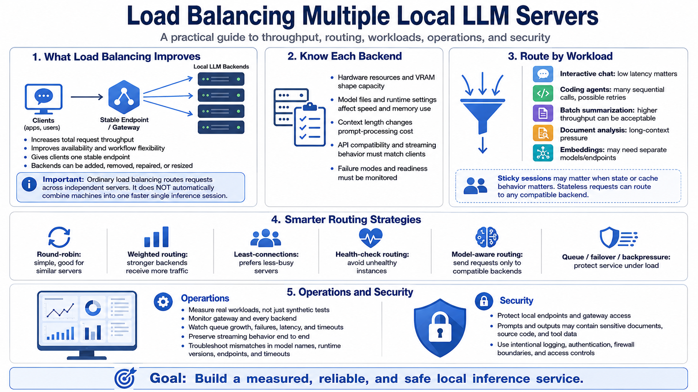

Course Summary and Key Takeaways
Connecting to LMS... Progress: in progress

Narration
Load balancing multiple local LLM servers can improve total request throughput, availability, and workflow flexibility. It gives tools one stable endpoint while backend servers can be added, removed, repaired, or resized. The durable expectation is simple: ordinary load balancing routes requests across independently running endpoints; it does not automatically combine machines into one faster single inference session.
A reliable setup depends on understanding each backend. Hardware resources, model files, runtime settings, context length, API compatibility, streaming behavior, and failure modes all shape capacity. Routing should reflect that reality. Round-robin may be enough for similar servers, while weighted, least-connections, health-check, model-aware, queue-based, and failover strategies become important as workloads diverge.
Workload awareness keeps the service usable. Interactive chat, coding agents, batch summarization, document analysis, embeddings, long-context requests, and tool-using workflows have different latency, state, retry, and concurrency needs. Sticky sessions may matter when state or cache behavior matters. Stateless requests may route freely to any compatible backend.
Operations and security complete the design. Measure real workloads, monitor the gateway and every backend, watch queue growth and failures, preserve streaming behavior, and troubleshoot mismatches in model names, runtime versions, endpoints, and timeouts. Protect local LLM endpoints because they may process sensitive prompts, documents, source code, and tool outputs. The goal is a practical local inference service that is measured, reliable, and safe to use.